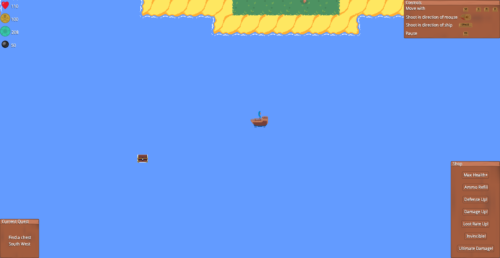
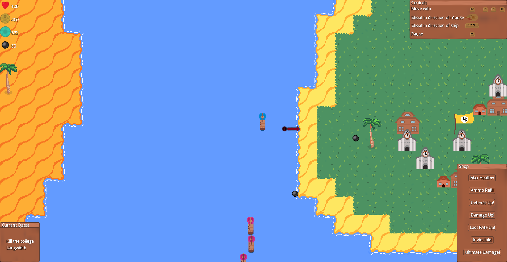
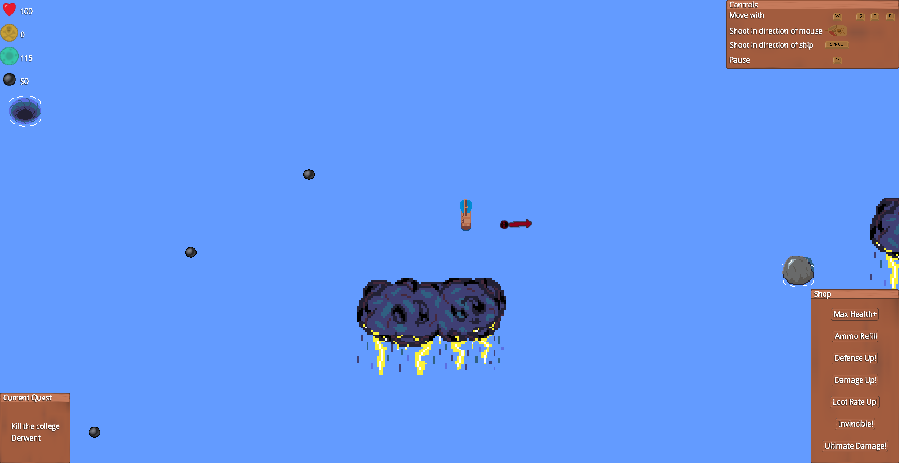
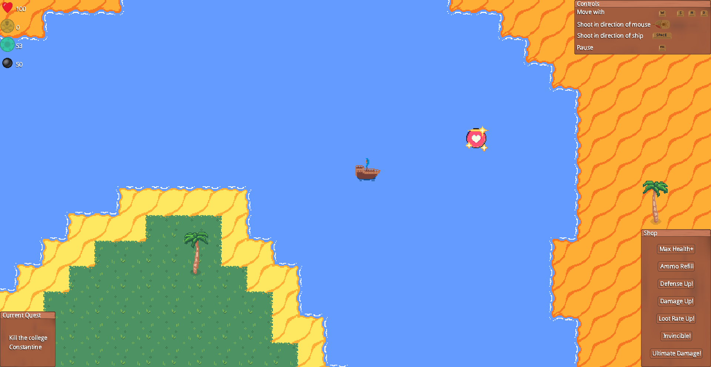

Game Info:
You control a ship sailing the Lake of York and are tasked with fulfilling certain quests along the way.
You use WASD keys to control the direction of the ship. The cannonball can be fired in the direction of the mouse with a left click, or in the direction of the ship with the spacebar.
Finding chests
You may need to follow directions in the prompt to sail around and find and collect a chest.
Destroying colleges
You may be tasked with destroying a given college. You will need to find the college by following the indicator.
Obstacles and Weather
You will encounter obstacles and weather such as storms, whirlpools, rocks, barrels and debris. Avoid hitting these as they deal various forms of damage.
Power-Ups
You can find a variety of PowerUps as you explore which will grant you different powers! These can also be bought from the shop with plunder.